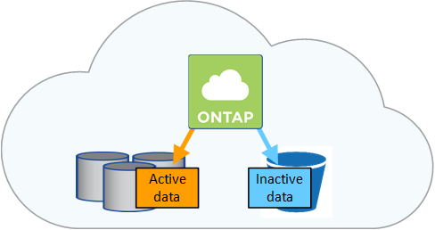

请求文档变更
请求文档变更 在 GitHub 上编辑
在 GitHub 上编辑 提供者指南
提供者指南数据分层概述
通过将非活动数据自动分层到低成本的对象存储，降低存储成本。活动数据保留在高性能 SSD 或 HDD 中，而非活动数据则分层到低成本对象存储中。这使您可以回收主存储上的空间并缩减二级存储。

Cloud Volumes ONTAP 支持在 AWS ， Azure 和 Google 云平台中进行数据分层。数据分层由 FabricPool 技术提供支持。

|
您无需安装功能许可证即可启用数据分层（ FabricPool ）。 |
AWS 中的数据分层
在 AWS 中启用数据分层时， Cloud Volumes ONTAP 会将 EBS 用作热数据的性能层，而将 AWS S3 用作非活动数据的容量层。
- 性能层
-
性能层可以是通用 SSD （ GP3 或 GP2 ）或配置的 IOPS SSD （ IO1 ）。
使用吞吐量优化型 HDD （ st1 ）时，不建议将数据分层到对象存储。 - Capacity tier
-
Cloud Volumes ONTAP 系统使用 Standard 存储类将非活动数据分层到一个 S3 存储分段。Standard 是存储在多个可用性区域中的频繁访问数据的理想选择。
Cloud Manager 会为每个工作环境创建一个 S3 存储分段，并将其命名为 fabric-pool-cluster unique identifier 。不会为每个卷创建不同的 S3 存储分段。 - 存储类
-
AWS 中分层数据的默认存储类为 Standard 。如果您不打算访问非活动数据，可以通过将存储类更改为以下类型之一来降低存储成本： Intelligent Tierage ， one-Zone Inrequent Access 或 Standard-Inrequent Access 。更改存储类时，如果 30 天后未访问非活动数据，则非活动数据将从标准存储类开始，并过渡到选定的存储类。
如果您确实访问数据，访问成本会更高，因此在更改存储类之前，请考虑这一点。 "了解有关 Amazon S3 存储类的更多信息"。
您可以在创建工作环境时选择一个存储类，之后可以随时对其进行更改。有关更改存储类的详细信息，请参见 "将非活动数据分层到低成本对象存储"。
数据分层的存储类是系统范围的，而不是每个卷。
Azure 中的数据分层
在 Azure 中启用数据分层后， Cloud Volumes ONTAP 会将 Azure 托管磁盘用作热数据的性能层，并将 Azure Blob 存储用作非活动数据的容量层。
- 性能层
-
性能层可以是 SSD 或 HDD 。
- Capacity tier
-
Cloud Volumes ONTAP 系统会使用 Azure hot 存储层将非活动数据分层到一个 Blob 容器中。热层非常适合经常访问的数据。
Cloud Manager 会为每个 Cloud Volumes ONTAP 工作环境创建一个新的存储帐户，其中包含一个容器。存储帐户的名称是随机的。不会为每个卷创建不同的容器。 - 存储访问层
-
Azure 中分层数据的默认存储访问层为 hot 层。如果您不打算访问非活动数据，可以通过更改为 cool 存储层来降低存储成本。更改存储层时，如果 30 天后未访问非活动数据，则非活动数据将从热存储层开始，并过渡到冷存储层。
如果您确实访问数据，访问成本会更高，因此在更改存储层之前，请考虑这一点。 "详细了解 Azure Blob 存储访问层"。
您可以在创建工作环境时选择一个存储层，之后可以随时对其进行更改。有关更改存储层的详细信息，请参见 "将非活动数据分层到低成本对象存储"。
用于数据分层的存储访问层是系统范围的，而不是每个卷。
GCP 中的数据分层
在 GCP 中启用数据分层时， Cloud Volumes ONTAP 会使用永久性磁盘作为热数据的性能层，并使用 Google 云存储分段作为非活动数据的容量层。
- 性能层
-
性能层可以是 SSD 永久性磁盘，平衡永久性磁盘或标准永久性磁盘。
- Capacity tier
-
Cloud Volumes ONTAP 系统使用 Region 存储类将非活动数据分层到一个 Google Cloud 存储分段。
Cloud Manager 会为每个工作环境创建一个分段，并将其命名为 fabric-pool-cluster unique identifier 。不会为每个卷创建不同的存储分段。 - 存储类
-
分层数据的默认存储类为 Standard Storage 类。如果数据不常访问，您可以通过更改为 Nearline Storage 或 Coldline Storage 来降低存储成本。更改存储类时，如果 30 天后未访问非活动数据，则非活动数据将从标准存储类开始，并过渡到选定的存储类。
如果您确实访问数据，访问成本会更高，因此在更改存储类之前，请考虑这一点。 "了解有关 Google Cloud Storage 存储类的更多信息"。
您可以在创建工作环境时选择一个存储层，之后可以随时对其进行更改。有关更改存储类的详细信息，请参见 "将非活动数据分层到低成本对象存储"。
数据分层的存储类是系统范围的，而不是每个卷。
数据分层和容量限制
如果启用数据分层，系统的容量限制将保持不变。此限制分布在性能层和容量层中。
卷分层策略
要启用数据分层、您必须在创建、修改或复制卷时选择卷分层策略。您可以为每个卷选择不同的策略。
某些分层策略具有相关的最小冷却周期、这将设置卷中的用户数据必须保持非活动状态的时间、以便将数据视为“冷”并移动到容量层。将数据写入聚合时，冷却期开始。

|
您可以将最小冷却期和默认聚合阈值更改为 50% （下文将提供更多信息）。 "了解如何更改冷却期" 和 "了解如何更改阈值"。 |
通过 Cloud Manager ，您可以在创建或修改卷时从以下卷分层策略中进行选择：
- 仅快照
-
在聚合达到 50% 容量后、 Cloud Volumes ONTAP 将不与活动文件系统关联的 Snapshot 副本的冷用户数据分层到容量层。冷却时间约为 2 天。
如果已读取、则容量层上的冷数据块会变得很热并移动到性能层。
- 全部
-
所有数据（不包括元数据）都会立即标记为冷数据，并尽快分层到对象存储。无需等待 48 小时，卷中的新块就会变冷。请注意，在设置所有策略之前，卷中的块需要 48 小时才能变冷。
如果读取，则云层上的冷数据块将保持冷状态，不会回写到性能层。此策略从 ONTAP 9.6 开始可用。
- 自动
-
在聚合达到 50% 容量后、 Cloud Volumes ONTAP 会将卷中的冷数据块分层到容量层。冷数据不仅包括 Snapshot 副本、还包括来自活动文件系统的冷用户数据。冷却期约为 31 天。
从 Cloud Volumes ONTAP 9.4 开始支持此策略。
如果通过随机读取进行读取、则容量层中的冷数据块会变得很热并移动到性能层。如果按顺序读取（例如与索引和防病毒扫描关联的读取）进行读取、冷数据块将保持冷态并且不会移动到性能层。
- 无
-
将卷的数据保留在性能层中、防止将其移动到容量层。
复制卷时，您可以选择是否将数据分层到对象存储。否则， Cloud Manager 会将 * 备份 * 策略应用于数据保护卷。从 Cloud Volumes ONTAP 9.6 开始， * 所有 * 分层策略将取代备份策略。
关闭 Cloud Volumes ONTAP 会影响冷却期
数据块通过散热扫描进行冷却。在此过程中，未使用的块的块温度会移动（冷却）到下一个较低的值。默认散热时间取决于卷分层策略：
-
自动： 31 天
-
仅 Snapshot ： 2 天
要使散热扫描正常运行，必须运行 Cloud Volumes ONTAP 。如果关闭 Cloud Volumes ONTAP ，则散热也会停止。因此，您的散热时间会更长。
|
|
关闭 Cloud Volumes ONTAP 后，每个块的温度将保持不变，直到您重新启动系统为止。例如，如果在关闭系统时某个块的温度为 5 ，则在重新打开系统时，该临时值仍为 5 。 |
设置数据分层
有关说明以及支持的配置列表，请参见 "将非活动数据分层到低成本对象存储"。